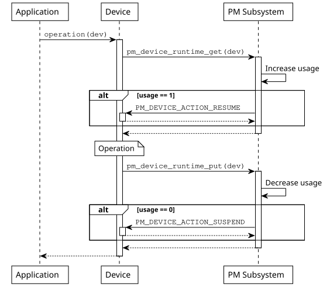
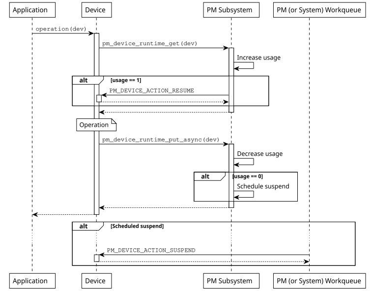

设备运行时电源管理
简介
设备运行时电源管理（PM）框架是一种主动电源管理机制，它独立于系统状态，挂起空闲或未使用的设备，从而降低整个系统的功耗。可以通过设置 CONFIG_PM_DEVICE_RUNTIME 启用它。在这种模型中，设备驱动负责指明何时需要设备、何时不需要。这些信息用于根据使用计数决定何时挂起或恢复设备。
在设备上启用设备运行时电源管理后，其状态最初会被设为 PM_DEVICE_STATE_SUSPENDED，表示未被使用。收到第一个设备请求时，设备会被恢复，从而进入 PM_DEVICE_STATE_ACTIVE 状态。设备会一直保持该状态，直到不再被使用。此时设备会被挂起，直到下一个设备请求到来。如果挂起是同步执行的，设备会立即进入 PM_DEVICE_STATE_SUSPENDED 状态；如果是异步执行的，设备会先进入 PM_DEVICE_STATE_SUSPENDING 状态，待该动作执行后再进入 PM_DEVICE_STATE_SUSPENDED 状态。
对于位于电源域中的设备（通过设备树 'power-domains' 属性指定），设备运行时电源管理会在子设备上调用 pm_device_runtime_get() 和 pm_device_runtime_put() 时，自动尝试请求和释放其所依赖的域。
要让上述机制自动控制电源域状态，必须在电源域设备上启用设备运行时电源管理。要全局启用设备运行时电源管理，请启用 CONFIG_PM_DEVICE_RUNTIME_DEFAULT_ENABLE。要只为选定的设备启用设备运行时电源管理，请设置 zephyr,pm-device-runtime-auto 设备树属性，或对选定的设备使用 pm_device_runtime_enable()。
设备运行时电源管理框架的设计目标是以最少的应用程序工作量尽量降低设备功耗。设备驱动负责指明何时需要设备处于工作状态、何时不需要。因此，应用程序不能手动挂起或恢复设备。不过，应用程序可以决定何时为某个设备禁用或启用运行时电源管理。例如，如果应用程序希望某个设备始终处于活动状态，这就很有用。
设计原则
在设备上启用运行时电源管理后，该设备在系统电源转换期间将不再被恢复或挂起。相反，由设备全权负责指明何时需要设备、何时不需要。设备运行时电源管理 API 使用引用计数来跟踪设备的使用情况，从而让 API 判断设备何时需要恢复或挂起。API 使用 get 和 put 这两个术语分别表示需要和不再需要设备。在考虑设备依赖关系时，这一机制起着关键作用。例如，如果一个总线设备被多个传感器使用，我们可以让总线保持活动状态，直到最后一个传感器用完它。
备注
目前，设备运行时电源管理 API 并不管理设备依赖关系。这实际上意味着，如果一个设备依赖其他设备才能工作（例如传感器可能依赖总线设备），那么每次事务都会恢复和挂起总线。一般来说，在子设备被使用时让父设备保持活动状态更高效，因为子设备可能在短时间内执行多次事务。在加入这一功能之前，设备可以手动 get 或 put 其依赖项。
设备驱动可以使用 pm_device_runtime_get() 函数表明它 需要 设备处于活动或工作状态。该函数会增加设备的使用计数，并在必要时恢复设备。类似地，可以使用 pm_device_runtime_put() 函数表明不再需要该设备。该函数会减少设备的使用计数，并在必要时挂起设备。值得注意的是，在这两种情况下，操作都是同步执行的。下面的时序图展示了设备如何使用该 API 以及预期的事件序列。

同步模型再简单不过了。但它可能引入不必要的延迟，因为应用程序要等到设备被挂起（如果设备不再被使用）才能得到操作结果。如果操作很快（例如翻转一个寄存器），这可能不成问题。但如果挂起需要通过慢速总线发送数据包，情况就不同了。因此，设备驱动也可以使用 pm_device_runtime_put_async() 函数。同样，在设备不再被使用的情况下，该函数会调度挂起操作。
默认情况下，运行时电源管理操作被转交给系统工作队列执行。但设备驱动在挂起期间不得执行任何阻塞操作，因为这可能使系统工作队列停滞，并对系统响应能力产生负面影响。
为解决这个问题，应用程序可以启用 CONFIG_PM_DEVICE_RUNTIME_USE_DEDICATED_WQ，将运行时电源管理配置为使用专用工作队列。
如果需要阻塞行为（例如访问慢速外设或等待总线事务），则必须改用电源管理子系统的工作队列。需要这种行为的驱动可以通过启用 CONFIG_PM_DEVICE_DRIVER_NEEDS_DEDICATED_WQ 显式请求。
对于资源受限且不需要异步操作的目标，可以通过取消选择 CONFIG_PM_DEVICE_RUNTIME_ASYNC 完全禁用该功能，以减少内存使用和系统复杂度。

实现指南
首先，设备驱动需要实现电源管理动作回调，电源管理子系统使用该回调挂起或恢复设备。
static int mydev_pm_action(const struct device *dev,
enum pm_device_action action)
{
switch (action) {
case PM_DEVICE_ACTION_SUSPEND:
/* suspend the device */
...
break;
case PM_DEVICE_ACTION_RESUME:
/* resume the device */
...
break;
default:
return -ENOTSUP;
}
return 0;
}
电源管理子系统会对电源管理动作回调的调用进行串行化，因此无需特殊的同步。
要在设备上启用设备运行时电源管理，驱动需要在初始化时调用 pm_device_runtime_enable()。注意，如果设备状态为 PM_DEVICE_STATE_ACTIVE，该函数会挂起设备。如果设备在物理上处于挂起状态，初始化函数应在调用 pm_device_runtime_enable() 之前调用 pm_device_init_suspended()。
/* device driver initialization function */
static int mydev_init(const struct device *dev)
{
int ret;
...
/* OPTIONAL: mark device as suspended if it is physically suspended */
pm_device_init_suspended(dev);
/* enable device runtime power management */
ret = pm_device_runtime_enable(dev);
if (ret < 0) {
return ret;
}
}
也可以在对应的设备树节点上添加 zephyr,pm-device-runtime-auto 标志，为设备实例自动启用设备运行时电源管理。启用后，设备的 init 函数运行并成功返回后会立即调用 pm_device_runtime_enable()。
foo {
/* ... */
zephyr,pm-device-runtime-auto;
};
假设有一个实现了 operation API 调用的设备驱动示例，get 和 put 操作可以按如下方式进行：
static int mydev_operation(const struct device *dev)
{
int ret;
/* "get" device (increases usage count, resumes device if suspended) */
ret = pm_device_runtime_get(dev);
if (ret < 0) {
return ret;
}
/* do something with the device */
...
/* "put" device (decreases usage count, suspends device if no more users) */
return pm_device_runtime_put(dev);
}
如果挂起操作 很慢，设备驱动可以使用异步 API：
static int mydev_operation(const struct device *dev)
{
int ret;
/* "get" device (increases usage count, resumes device if suspended) */
ret = pm_device_runtime_get(dev);
if (ret < 0) {
return ret;
}
/* do something with the device */
...
/* "put" device (decreases usage count, schedule suspend if no more users) */
return pm_device_runtime_put_async(dev, K_NO_WAIT);
}
示例
以下是一些展示设备运行时电源管理功能的实用示例：